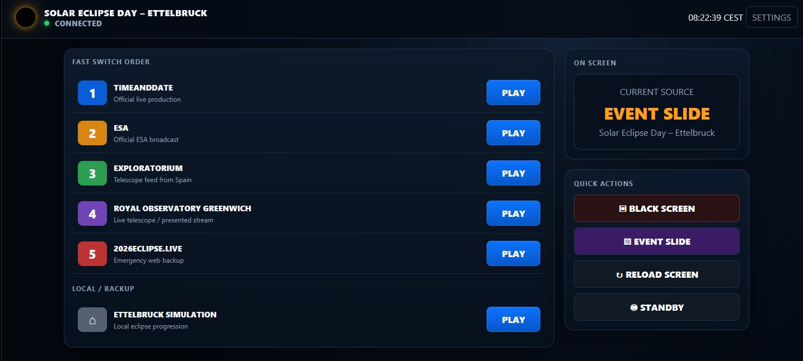
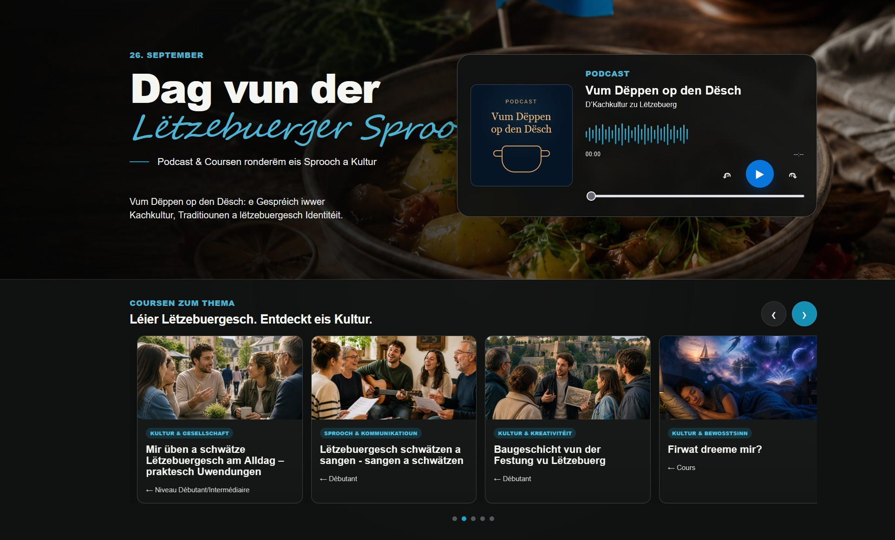
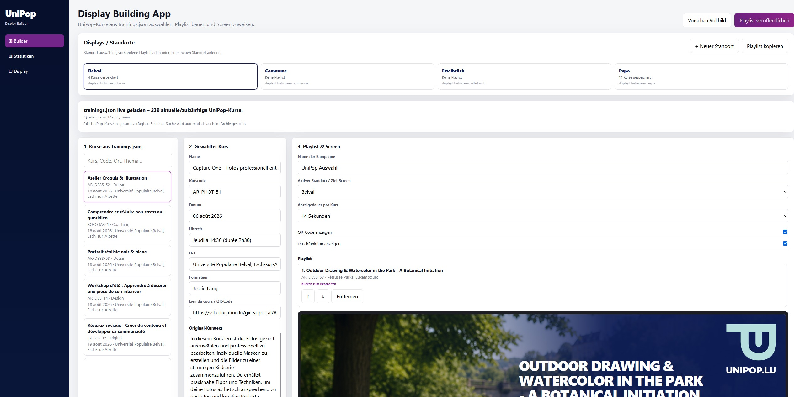

Machines that shouldn't work.
Eighteen builds from Luxembourg. Raspberry Pis inside lighting rigs, AI inside picture frames, MIDI inside a pneumatic organ from 1900. All of them running.
1900 meets MIDI.
A pneumatic orchestrion whose electronics had finally died. The pumps, valves and perforated cards stayed exactly as they were — everything downstream was rebuilt around an Arduino, a Raspberry Pi and four channels of audio. It plays for museum visitors every day.
The workshop
Every build started as a question that nothing on a shelf could answer.
Jukebox Bluetooth Project
Modern audio inside, original chrome outside. Nothing irreversible done to the cabinet.

Radio Jukebox
Original buttons, new brain. Programmable picks, prize logic and DMX lighting from a phone.
Decap Orchestrion
A dance-hall organ from around 1900, rebuilt around Arduino, Raspberry Pi and MIDI.
UniPop VR
Rooms you walk into instead of watch — built for teaching and for calm.

AuraFrame
A portrait frame that sees the room, listens and answers in natural speech.

UniPop Signage
Every screen in the building: playlists, scheduling and remote control from one place.

Ansage
Announcements triggered where they're needed, without someone waiting at the desk.

Quantum Pi
Quantum computing concepts simulated on hardware that costs forty euros.

Eclipse Broadcast Control
Source switching for a live solar eclipse. One shot at it, so it fails over on its own.

Frank's Toolbox
The audio utilities an in-house production team actually needed.

Frank's Magic
Assembles the day's content and publishes it to the displays unattended.

Lëtzebuerger Sprooch
Podcast and content for the Day of the Luxembourgish Language.

Newsletter Tool
Builds and sends the newsletter without anyone touching HTML.

UniPop Local
Courses and activities across Luxembourg on one interactive map.

UniPop Live
The technical side of getting a community into one room.
Long-Term Human–AI Interaction Study
What memory and continuity do to a months-long relationship with an AI.

IGS Website
A site for the Institut für Geschichte und Soziales, editable by the people who run it.

GlobeTip 2026
No accounts, no ads. Enter your guesses, see who was least wrong.
How I work
I take an idea from the first sketch to something that actually runs. Sometimes that's a web application, sometimes a Raspberry Pi in a metal box, sometimes a hundred-year-old machine that needed a new nervous system.
The projects I like best are where disciplines meet: software controlling physical hardware, AI talking to people in a room, modern electronics giving new capabilities to historic instruments. That's also where the interesting problems live.
Most of this work exists because something off-the-shelf almost fit, but not quite. The gap between almost and exactly is the part worth building.
This is the collection — prototypes included, not just the finished ones.